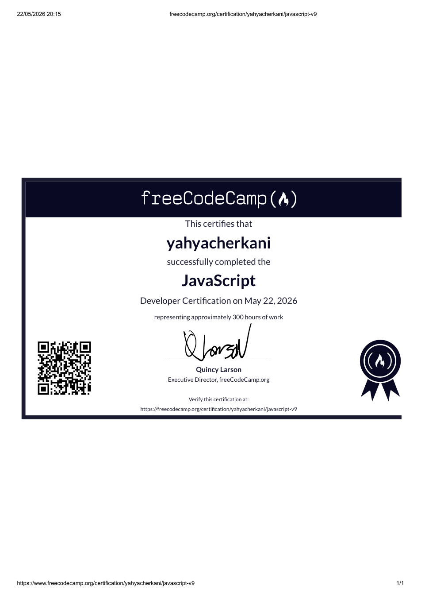

Cherkani Yahya
Développeur Full-Stack · Étudiant en BTS
Passionné par le développement web et les nouvelles technologies, je conçois des applications modernes qui combinent performance, simplicité et excellence visuelle.
J’interviens sur l’ensemble du processus de création, de l’interface utilisateur à la logique applicative, avec une approche fondée sur la rigueur, la maintenabilité du code et l’amélioration continue.

À Mon Sujet
Mon introduction

Développeur full-Stack en formation, passionné par la création d'applications web modernes et le développement de solutions numériques performantes. Je porte une attention particulière à la conception de projets bien structurés et à l'amélioration continue de mes compétences en génie logiciel.
Technicien logiciel spécialisé dans le développement d'applications cloud et de systèmes de surveillance. Expertise en FastAPI et architecture robuste.
Mon expertise
Mes compétences
Des outils modernes au service d'expériences numériques solides.
Langages
Frontend & UI
Backend & APIs
Bases de données
DevOps & Cloud
Outils
Portfolio
Mes travaux récents
Nova — E-commerce
Une boutique lifestyle immersive, optimisée pour une navigation rapide et une conversion fluide.
Météo — Atlas Sky
Des prévisions locales lisibles dans une interface atmosphérique et parfaitement responsive.
FOLIO
Portfolio — Studio Noa
Un concept éditorial audacieux conçu pour une directrice artistique indépendante.
Flow — Gestion d'équipe
Un tableau de bord clair pour suivre projets, tâches et indicateurs sans friction.
Maïa — Restaurant
Une expérience raffinée qui met en scène une cuisine méditerranéenne contemporaine.
Orbit — Landing page
Une page de lancement professionnelle pour un outil SaaS tourné vers la productivité.
Mon évolution
Mon parcours
Un apprentissage continu, entre projets concrets et nouvelles compétences.
Développeur Front-End Freelance
Indépendant · Casablanca
Conception et développement de sites vitrines et interfaces sur mesure pour des clients locaux et internationaux.
Développeur Web Junior
Digital Factory · Casablanca
Intégration de maquettes responsive, optimisation des performances et collaboration avec l'équipe design.
Technicien Spécialisé — Développement Digital
Institut de formation numérique
Algorithmique, développement web, bases de données et réalisation de projets en équipe.
JavaScript Algorithms & Data Structures
freeCodeCamp
Validation des fondamentaux JavaScript, structures de données et résolution de problèmes.
Services
Ce que j'offre
Développement Fullstack
Cloud & DevOps
Consulting Technique
Certifications
Mon parcours certifié

JavaScript Essentials 2
Formation avancée en JavaScript, programmation orientée objet et développement algorithmique.
Vérifier
Python Essentials 2
Maîtrise des concepts Python avancés, de la programmation objet et des applications modulaires.
Vérifier
JavaScript Developer Certification
Certification développeur JavaScript représentant environ 300 heures de formation et de projets.
VérifierGet in touch
Contact Me
Talk to me
cherkaniyahya4@gmail.com
Write me →+212 611346544
Write me →Cherkani Yahya
Write me →